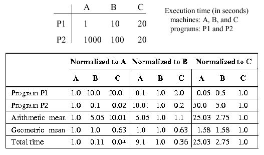

Reading Assignments and Exercises
When we talk about computer performance, we need to consider the following issues:
Method of Performance Evaluation - By what measures will the performance be assessed? Will the assessment be local to a specific part of the computer hardware, or global (i.e., across all hardware and software modules)? What will the mix of instructions be?
Limitations of Evaluation - What are the shortcomings of each method or measure of performance assessment? From whence do these limitations arise, and why? What can be done to improve these limitations?
Metrics - What formal measures are to be used for performance evaluation? Speed? Time used in a computation? Memory space required?
Processor Performance Equation - How will the processor's performance be described mathematically? Does the equation portray actual parameters of practical interest, or does the computational model described by the equation not match the processing architecture under test?
Performance Evaluation Reports - What methods of analysis and presentation are used to evaluate data? Is the data normalized to a particular benchmark result or parameter? Is the normalization performed in a physically meaningful way?
Ahmdahl's Law - Whatever measurements are made, as one continues to enhance processor performance, the overall improvement achieves diminishing returns.
We examine each of thise issues, as follows.
Computer performance evaluation is primarily based on throughput and response time. Throughput is how many bits of data are processed, or how many operations are performed, in a given interval of time. For example, we say that a processor has a throughput of N MB/s (megabytes per second). With respect to execution time of a program on a processor X, we say that
PerformanceX = 1 / Execution TimeX
and, for two processors X and Y,
Relative Performance = PerformanceX / PerformanceY
For example, in the preceding equation, if processor X is faster than processor Y, then Execution TimeX < Execution TimeY (all other things being equal), so Relative Performance < 1. This also implies increased throughput of X with respect to Y.
Key Concept. As a result, we want to improve performance by increasing performance, which means decreasing execution time. In practice, this can be done by (a) decreasing response time, or (b) adding more processors to a system (provided I/O is managed efficiently).
A program that is executing, or has been executed, has the following components:
Wall-Clock Time - how long it takes (typically, time in seconds) for your program to execute, from the time it is invoked to the time it completes. This time is measured with respect to a global time standard, so we name it according to a common object such as a wall clock. This is also called elapsed time.
CPU Time - comprised of user CPU time (time spent computing the program), and system CPU time (the time the operating system spends supporting the program).
I/O Time - time spend reading and writing data from/to memory.
Other Time - time spend running other programs, waiting for the operating system to be scheduled, etc.
We can measure a program's execution time using the
UNIX time command. For example, let's enter the UNIX
command time du at one's root directory (which can be
reached via the command cd. When I tried this on my
(large) directory tree, I got the following result:
0.21u 1.54s 0:24.49 7.1%
These four numbers have the following meaning:
User CPU Time = 0.21 seconds,
the first number (0.21u).
System CPU Time = 1.54 seconds,
the second number (1.54s).
Elapsed Time = 24.49 seconds,
the third number (0:24.49).
CPU Activity as Percent of Elapsed
Time = 7.1 percent, the fourth number
(7.1%).
Observe that percent CPU activity is computed as follows:
Step 2. Divide the Total CPU Time by Elapsed Time (e.g., 0.071 = 1.75 sec / 24.49 sec).
Step 3. Multiply by 100 to get percent (e.g., 7.1% = 0.071 x 100 percent).
Other Time is computed as follows:
Step 2. Subtract the Total CPU Time from Elapsed Time (e.g., Other Time = 22.74 sec = 24.49 sec - 1.75 sec).
Given a method of measuring time, and computation of different times (e.g., CPU, Other) from these measures of time, we can now discuss a simple model of computation for measuring CPU performance.
In order to measure CPU performance in a physically realistic way, we need a model of computation. In the simplest case, we start with the number of CPU cycles, defined as follows:
Ncyc = IC · CPI ,
where IC denotes the instruction count (number of instructions per program), and CPI denotes the average cycles per instruction.
Given the CPU cycle time tcyc or the clock rate BWclk, we can express the CPU time as:
tcpu = Ncyc · tcyc
or
tcpu = Ncyc · BWclk .
Patterson and Hennesey [Pat98] express this as
with units indicated for each variable.
If there are different types or classes of instructions in a given program, then the preceding equation for Ncyc is not an accurate estimate, because CPI can be affected by the instruction mix (nimber of each of type of instruction that occurs in the program). Thus, we use the following equation to more accurately determine the number of cycles incurred when a program is executed:
Ncyc = CPIi · ICi ,
where we assume that there are n classes of instructions. The frequency distribution of instructions, which is comprised of (IC1, IC2, ..., ICn), is obtained by a technique called execution profiling, which is supported by a variety of commercial software tools. The number of cycles per instruction type is determined from analysis of a specific processor design, validated by performance measurement.
Example 1. To illustrate the practical utility of these measurements, let us assume that a program runs in 10 seconds on a processor with a 400 MHz clock rate. We want to build a new computer that can run the program in 6 seconds by increasing the clock frequency to X MHz. An unfortunate consequence is that the average CPI will be 1.2 times higher in the new processor. Here's how we set the problem up to determine the new clock rate X:
Solving the equation yields X = 800 MHz. Thus, we see that doubling the clock rate does not necessarily double the processor speed, because there are other variables (e.g., CPI or the instruction mix) that can be affected, as shown below.
Example 2. Now we will consider the effect of instruction mix. Assume that the following data are correct:
Q: Which code sequence will be faster - #1 or #2?
A: The sequence that incurs the least number of cycles is faster. Using the preceding equation for Ncyc we see that the number of cycles for code sequences 1 and 2 are given by:
Ncyc(Seq.1) = (2 · 1) + (1 · 2) + (2 · 3)
= 10 cycles
Ncyc(Seq.2) = (4 · 1) + (1 · 2) + (1 · 3)
= 9 cycles .
Thus, code sequence #2 is faster, because it requires 9 cycles, versus 10 cycles for code sequence #1.
In an ideal situation, one has a suite of programs whose instruction mix is known exactly. By running each program on a processor to be analyzed, it is possible to determine CPI for each type of instruction. However, life is rarely ideal. Thus, we have the following types of benchmarking programs to measure and bound processor performance:
Synthetic Benchmarks are used to exactly measure specific characteristics of a processor (e.g., memory I/O performance, register-to-register I/O, speed of arithmetic functions, etc.) Because the benchmarking program is synthetic, one can put any combination of instructions into it, and the benchmark is not necessarily realistic.
Toy Benchmarks are simple but somewhat realistic programs that help the designer get a preliminary idea of a how a processor will behave under pseudo-realistic constraints. These might include tasks such as solving a simple matrix equation, performing a near-trivial image processing operation, etc.
Kernels are more involved programs that capture the functionality of a larger program. For example, one can use an operating system kernal to get an idea of the operating system performance on a given processor, provided that the kernal is executed significantly more in practice than the other programs in the operating system.
Real programs are used (a) to measure performance at many stages of processor design, (b) to estimate the processor's performance under realistic computing constraints and (c) in assessment of fielded systems.
In practice, realistic benchmarks include engineering or scientific applications, software development tools, transaction processing, and office applications such as large spreadsheets or formatting of word processing documents.
After one has measured the performance of a given processor, then one formulates a test report. In order to make our report accurate and meaningful to a hardware designer, we must have at least three elements in the report:
Hardware/Software Configuration tells the designer what benchmarking programs were run on the processor under test, and how the processor was set up (e.g., how much memory, what clock rate, compiler version, etc.)
Evaluation Process Conditions provide information about special constraints on the instruction mix that can influence the reproducibility of the performance measurement.
Performance Summary is typically expressed in terms of average rates. How these averages are computed is of practical interest.
For example, consider the following types of means:
Normalized results are not easily understood or accurately compared with the arithmetic mean, because the mean of ratios between two series of measurements is not the same as the ratio of the series means. Instead, normalized results should be combined with the geometric mean, which is independent of the data series used for normalization. This is because the ratio of two series' geometric means is the same as the mean of the ratios between the series.
That is, given two data series {Ai} and {Bi}, where i = 1..n, if the arithmetic mean is used, then
AM({Ai}) / AM({Bi}) AM({Ai / Bi})
whereas, with the geometric mean:
GM({Ai}) / GM({Bi}) = GM({Ai / Bi}) .
Here, the construct {Ai / Bi} means divide the i-th element of A by the i-th element of B. For example, if {Ai} = {2,4,6} and {Bi} = {2,2,3}, then {Ai / Bi} = {2/2, 4/2, 6/3} = {1,2,2}.
Example. The practical implications of this problem are illustrated in the following table:

Here, "Normalized to A" means that the data for processors A, B, and C are divided by the data for A. In the first set, programs P1 and P2 are both normalized to A, hence, the arithmetic and geometric means for A are both 1.0 (the mean of 1.0 and 1.0 is 1.0). However, the arithmetic mean for B is 5.05 = (10.0 + 0.1)/2, while the geometric mean for B is 1.0, due to the previously-mentioned normalization property. Total execution time is likewise normalized in the first set, to the value for A, which is 1001 = 1000 + 1. Thus, the total time for B = 0.10989 = (100 + 10) / 1001, which is approximately 0.11.
Self-Exercise. (1) Derive all the entries in the preceding table. Be able to explain how each one was calculated. (A problem like this will likely be an exam question.)
In the 1960s, Gene Amdahl derived an equation that expresses the diminishing returns that one obtains when trying to optimize a computer program. His equation has been adapted by Patterson and Hennesey, as follows:
This means that, the more you enhance the performance of a fraction f of a program or processor, the remaining (unenhanced) part (1 - f) gets progressively smaller. In order to keep the speedup S constant for each enhancement, you have to enhance performance of the remaining (1 - f) part to have a much greater speedup than S.
Example. Suppose a program takes 10 seconds to execute on processor P. After P's floating point (FP) unit is enhanced to be 5 times faster, then reinstalled in P, the effective speedup is graphed in Figure 1.31a. Here, the speedup is on the ordinate (vertical axis) and the fraction of the execution affected by the FP is on the abscissa. What is obvious is that in order to obtain a speedup of 2.0, the new FP has to be used approximately 0.65 (65 percent) of the time. In all but the most highly parallelized image or signal processing code, this is quite unlikely.
(a)
(b)
Figure 1.31. Amdahl's Law applied to processor performance enhancement,
adapted from [Maf01].
The situation worsens in Figure 1.31b. Here, we see that if the new FP unit affects only 1/2 of the program execution, then we will approach a speedup of 2.0 asymptotically, regardless of how much the FP unit's performance is improved. As in Figure 1.31a, the speedup is graphed on the ordinate, with the enhancement factor of the FP unit on the abscissa.
Amdahl's Law has important implications for practical computer design. Namely, if a portion of the CPU does not affect program execution very much, then there is little point in drastically enhancing its performance. As a result, we try to enhance the most frequent deficiencies first. This is called enhancing the common case and it works, for the reasons shown in the preceding example.